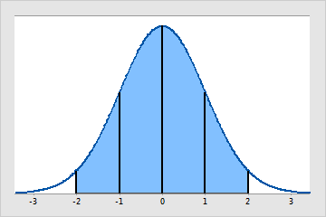
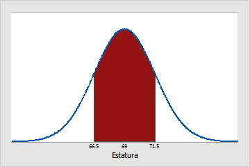

Es una distribución con forma de campana donde las desviaciones estándar sucesivas con respecto a la media establecen valores de referencia para estimar el porcentaje de observaciones de los datos.
* Una variable aleatoria.
* Calcular la media.
* Calcular la desviación típica.
* Decidir la función que queremos representar: función de densidad de probabilidad o función de distribución.
La estatura de todos los adultos masculinos que residen en el estado de Pennsylvania siguen aproximadamente una distribución normal. Por lo tanto, la estatura de la mayoría de los hombres estará cerca de la estatura media de 69 pulgadas. Un número similar de hombres serán un poco más altos y un poco más bajos que 69 pulgadas. Solo unos pocos serán mucho más altos o mucho más bajos. La desviación estándar es de 2.5 pulgadas.
Aproximadamente, el 68% de los hombres de Pennsylvania tiene una estatura de entre 66.5 (μ - 1σ) y 71.5 (μ + 1σ) pulgadas.
Aproximadamente, el 95% de los hombres de Pennsylvania tiene una estatura de entre 64 (μ - 2σ) y 74 (μ + 2σ) pulgadas.
Aproximadamente, el 99.7% de los hombres de Pennsylvania tiene una estatura entre 61.5 (μ - 3σ) y 76.5 (μ + 3σ) pulgadas.
Se pide:
¿Cuál es la probabilidad de que una persona que se presenta el examen obtenga una calificación superior a 72?
Si se sabe que la calificación de un estudiante es mayor que 72, ¿cuál es la probabilidad de que su calificación sea, de hecho, superior a 84?
Calcular el número de días del mes en los que se espera alcanzar máximas entre 21 y 27.